操作系统概述
计算机系统的概念
操作系统资源
- 计算机硬件

- 计算机软件
计算机软件是一个为计算机系统配置程序和数据的集合，它能充分发挥硬件潜能、扩充硬件功能，并能组织、协调好硬件的使用，完成各种系统任务和应用任务。- 计算机硬件和软件相辅相成、互相促进、缺一不可。
计算机软件根据完成的任务不同可分为：
- 系统软件—-指为程序运行提供运行环境的软件，系统软件管理计算机系统中的各种资源，生成计算机可识别的机器指令，为各类程序提供良好的运行环境。系统软件种类繁多，包括：操作系统、编译系统、数据库管理系统、分布式软件系统等。
- 工具软件—-又称工具软件，它是辅助软件开发人员从事软件开发工作的软件。工具软件能提高软件的开发效率、改善软件的产品质量。
- 应用软件—-指在系统软件和工具软件之上建立的具有特殊用途、针对特定用户的软件。
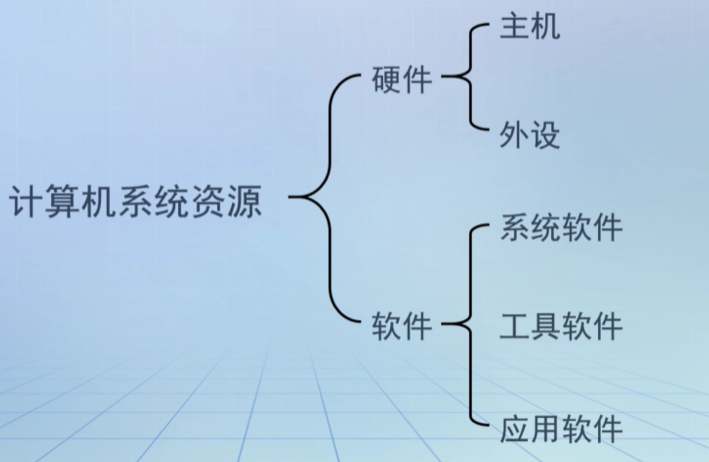
操作系统地位
计算机系统层次结构图
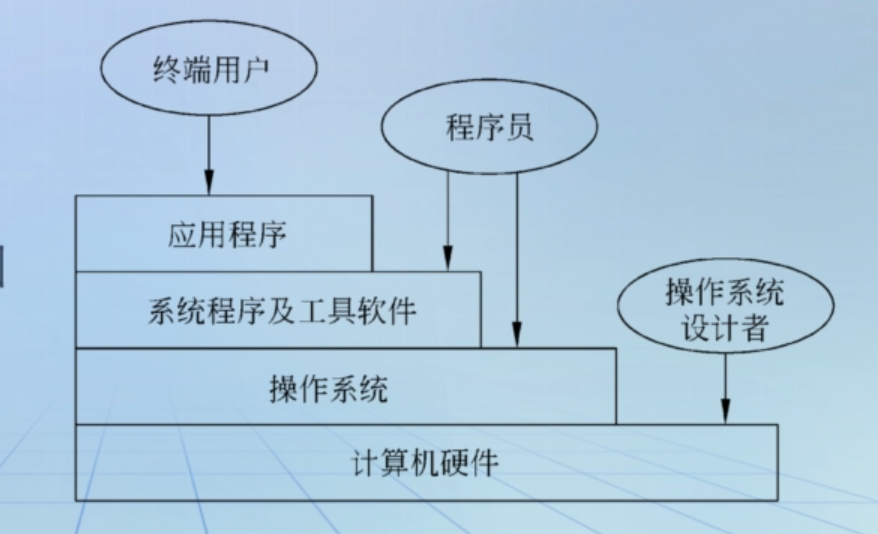
操作系统的定义
什么是操作系统？
普通用户观点：认为操作系统是用户使用计算机系统的接口，它为计算机用户提供了方便的工作环境。应用程序开发人员观点：认为操作系统是建立在计算机硬件平台上的虚拟机，它为应用软件提供了许多比硬件功能更强的功能。系统开发者观点：认为操作系统是系统资源管理器；操作系统是计算机系统工作流程的组织者。操作系统的定义：操作系统是配置在计算机硬件上的
第一层软件；控制和管理着计算机系统中的所有软硬件资源，使计算机系统高效工作；同时又为用户提供良好的用户接口，使用户能够方便、有效、安全地使用计算计。
操作系统的设计目标
- 高效性—-系统资源的利用率和作业吞吐量
- 方便性—-方便用户使用
- 可扩充性—-便于增加新的功能和修改旧的功能
- 开放性—-使不同厂商生成的计算机能通过网络加以集成化并且正确，有效的协同工作，实现应用程序的可移植性和互操作性
- 安全性—-身份验证，访问控制，数据保密性，数据完整性以及不可否认性
操作系统的发展历史
操作系统的发展动力
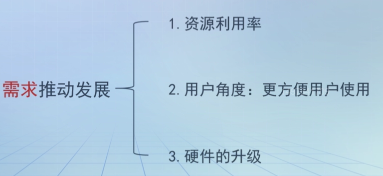
操作系统的发展历史
第一代计算机（1946——1955）：计算机主要由电子管组成，无操作系统（人工操作阶段）。
编程语言：
机器语言输入输出：
纸带或卡片
用户在操作台前调试程序，独占全机。用户既是程序员，又是操作员，手工操作。
一次完成一个功能（计算，I/O，用户思考/反应），之间沒有重叠。
人工操作过程：
- 先把程序纸带（或卡片）装上计算机。
- 然后启动输入机把程序送入计算机。
- 接着通过控制台开关启动程序运行。
- 计算完毕，打印机输出计算结果，用户写下并取走纸带（或卡片）。
- 第二个用户上机，重复同样的步骤。
人工操作阶段特点：
一个程序独占计算机资源，系统资源利用率低。
人工干预较多，处理机因等待人工干预的完成而大部分时间处于空闲。
人工操作易发生错误，一旦出错，无论程序已执行多长时间，必须重新开始执行。
第二代计算机（1955——1965）：
计算机主要由晶体管组成，出现监控程序。
第二代计算机——监控程序
在此阶段依次出现了联机批处理和脱机批处理
联机批处理特征：
作业信息从慢速的I/O设备到快速存储设备以及结果信息从快速存储设备输出到慢速的输出设备，整个过程在主机的控制下完成。
脱机批处理特征：
为了提高CPU的利用率，把慢速的输入输出设备和快速存储设备进行信息传输的过程交给卫星机完成，即脱离主机的控制。
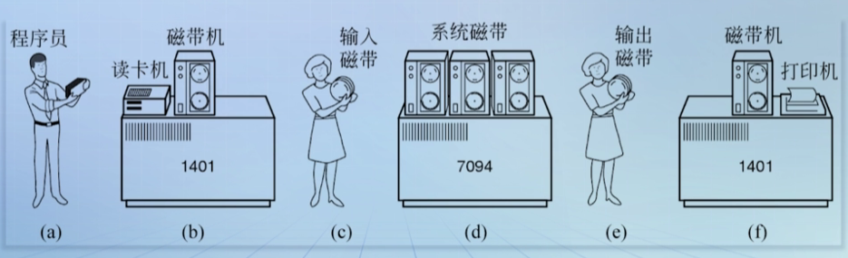
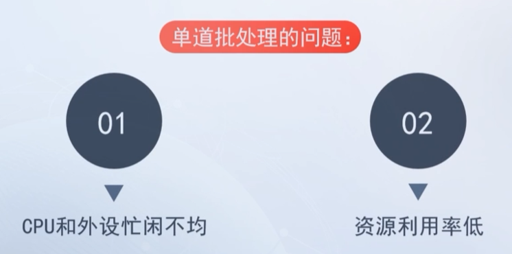
第三代计算机（1965——1980）：
出现
真正的OS1.采用集成电路芯片。
2.出现了中断和通道技术；——提供CPU和外设并行工作的基础。
3.批处理由单道发展成多道，并产生分时、实时系统。
第四代计算机（1980——1990）：
采用大规模集成电路芯片，出现成熟的商用操作系统。
第五代计算机（1990——至今）：
计算机主要由超大规模集成电路芯片组成。
操作系统的分类
批处理操作系统
工作方式：1.
程序员将作业交给程序员。2.
操作员将多个用户的作业组成一批输入磁带。3.启动
批处理系统自动从磁带上加载作业到内存。- 执行，最后把执行结果输出。
- 根据系统一次
加载作业的道数，批处理操作系统分为： 单道批处理操作系统。多道批处理操作系统。
单道批处理系统
单道批处理特征：自动性、顺序性、单道性。主要问题：CPU和I/O设备是以串行方式工作，造成资源利用率低，CPU等待I/O操作。
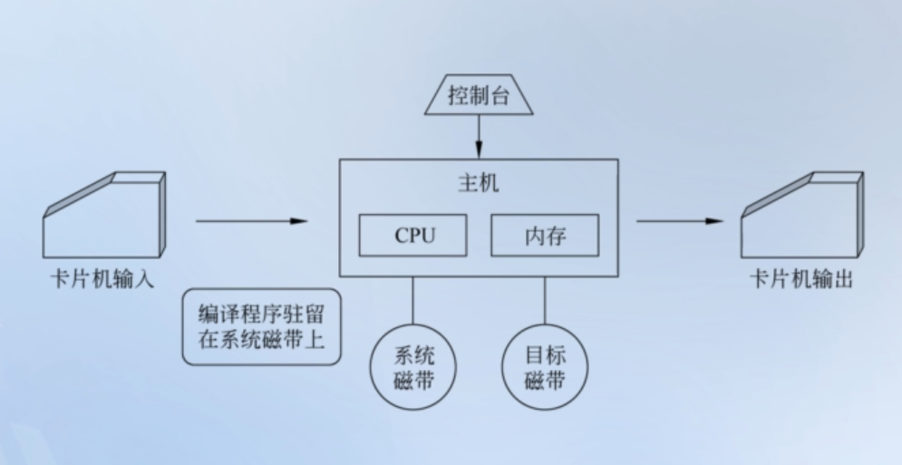
多道批处理系统
基本思想：外存中的作业组织成后备作业列队，系统按一定的调度原则选择若干作业装入内存，这些作业共享系统资源，并在操作系统的控制下交替在CPU上执行。
特点：多道性
宏观上并行
微观上串行
如何构造一个多道批处理系统？
需要解决的问题：
1.
内存管理，系统必须给多个作业分配内存。2.
内存保护，避免一个程序中的bug造成整个系统崩溃，或者是破坏了其他程序的执行。3.
CPU调度，系统必须在多个作业中选择其中的一个去使用CPU。4.系统必须去管理各个并发运行的作业之间的
交互关系。
例题：
- 设内存中有甲、乙两道程序，两道程序按
甲->乙优先次序执行。他们的计算和I/O的时间如表所示，假设两道程序使用相同设备进行I/O操作，即程序以串行方式使用设备，计算一下，单道串行和多道并发运行两道程序各需多长时间？
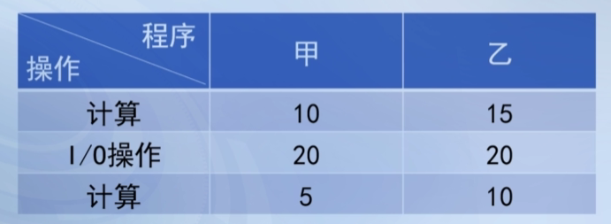
单道串行：程序甲执行完，程序乙开始执行，所以把所有时间加起来求和即可。10+20+5+15+20+10=80
多道并发运行：
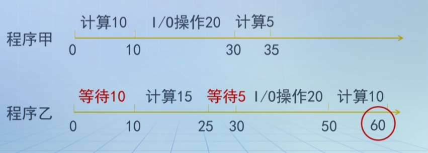
通过例题分析得到结论：
缺点：- 只是解决了CPU与I/O设备之间的并发运行。
问题：- 没有解决用户的响应时间要求
分时操作系统
- 工作方式：主机连接若干终端，每个用户通过终端以交互的方式使用计算机系统；系统把CPU的时间分割成很小的时间段，称为“时间片”，CPU依次轮流为各个终端的任务服务一个时间片，因为时间片短，相应及时，每个用户都感觉
独占计算机。
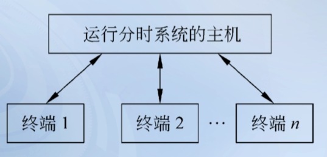
分时系统特征：1.同时性；又称为多路性。
2.交互性。
3.独占性。
4。及时性。
关键问题：时间片的选取。
分时系统的分类：
- 单道分时系统——在内存中只存一个作业，一个作业可能被频繁调用调出，性能较差
- 多道分时系统——在内存中存放多个作业，系统把已具备运行条件的所有作业排列成一个队列，依次轮流的获得一个时间片来运行，切换作业就在内存，没有调用调出
- 具有
“前台”和“后台”的分时系统——为了充分利用处理机，前台存放按时间片调用调出的交互式作业，后台存放的是批处理作业，仅当前台没有作用可运行时，才会运行后台的作业，既保证用户和前台作业的及时交互，又保证系统的效率
实时操作系统
定义：
实时操作系统是指使计算机能及时响应外部时间的请求，在规定的严格时间内完成对该事件的处理，并控制所有实时设备和实时任务协调一致地工作和操作系统。主要特征：
实时性：对外部请求在严格时间范围内做出反应
可靠性：要求高度可靠
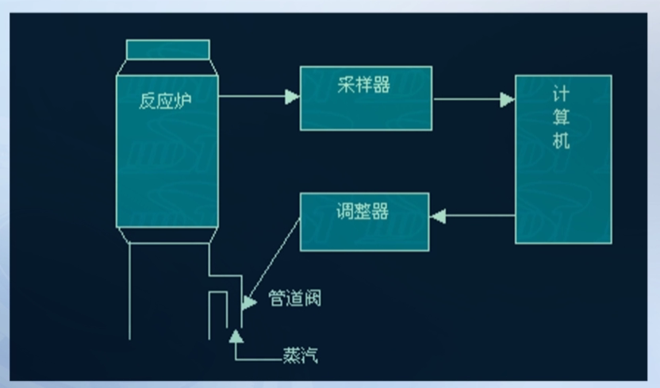
实时系统的应用主要分两类：
实时过程控制，用于工业控制、军事控制。
实时通信（信息）处理，用于情报检索、电信、银行、飞机订票等领域。
实时系统的关键指标是
时间，按截止时间可分为：硬实时任务软实时任务
个人计算机操作系统
定义：
个人计算机主要为了满足
个人用户的事务处理和多媒体的应用需求；配置在个人计算机之上并对个人计算机性能进行优化的操作系统就是个人计算机操作系统。主要特征：
界面友好，方便易用
有丰富应用软件
支持多种硬件和外部设备
网络操作系统
计算机网络和网络操作系统：
计算机网络就是把地理上分散而且独立自治的若干台计算机通过通信线路相互连接，按照网络协议进行数据传输和通信，实现资源共享。网络操作系统是为了使网络上各计算机能方便而有效地共享网络资源，为网络用户提供所需的各种服务的软件和有关规程的集合。网络操作系统应具有以下
两大功能：提供高效、可靠的网络通信能力
提供多种网络服务功能
分布式操作系统
分布式计算机系统和分布式操作系统：
分布式计算机系统，是指由多台分散的计算机，经互联网络的连接而形成的系统，系统的处理和控制功能分布在各个计算机上。分布式操作系统，是指配置在分布式系统上的操作系统，它能直接对分布式系统中的各种资源进行动态分配，并能有效控制和协调分布式系统中各任务的并行执行；同时还向用户提供了一个方便的、透明的使用分布式系统的界面。
分布式系统的主要特征：
- 统一性
- 共享性
- 透明性
- 自治性
分布式系统示例图
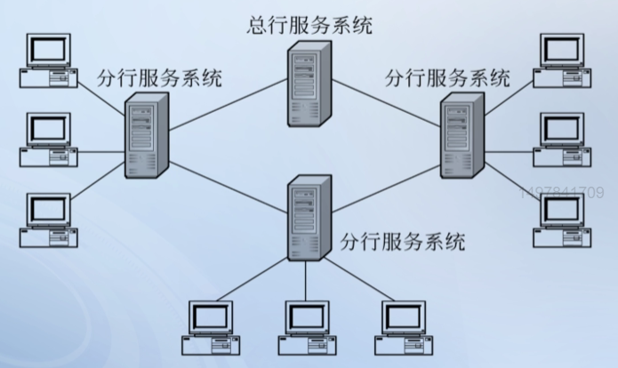
嵌入式操作系统
嵌入式操作系统（Embedded Operating System）是为嵌入式应用研制的一种特定的操作系统，它运行在嵌入式计算机或嵌入式处理及芯片上，具有及时响应外部请求，调度执行任务和控制I/O设备等操作系统功能。
嵌入式操作系统的特征：
- 实时性
- 微型化
- 可定制
- 可靠性
操作系统的主要功能
操作系统四大管理功能
- 处理机管理
- 内存管理
- 外设管理
- 文件管理
用户接口管理：图形接口、命令接口、程序接口。
处理机管理：进程控制、进程调度、进程同步、进程通信。
内存管理：存储分配、存储扩充、存储保护、地址重定位。
外设管理：设备分配、缓冲管理、设备独立性、设备处理程序。
文件管理：目录管理、读写管理、权限管理、存储空间管理。
处理机管理功能
进程控制：为作业创建进程，撤销（或终止）已结束的进程，以及控制进程在运行过程中的状态转换。
进程同步：用户为多个进程（含线程）的运行进行协调，有进程互斥和进程同步两种方式。
进程通信：实现相互合作进程之间的信息交换。
进程调度：从进程的就绪队列中按照一定算法选出一个进程，将处理机分配给它。
内存管理功能
内存分配：
- 为多道程序合理分配内存空间，使它们“各得其所”
- 提高内存空间的利用率
- 允许正在运行的程序申请附加的存储空间
内存映射：
- 将地址空间中的逻辑地址转换为内存空间中对应的物理地址，该功能在硬件的支持下完成
内存保护：
- 确保每道用户程序都在自己的空间内运行，彼此互不干扰。
- 不允许用户程序访问操作系统的程序和数据。
内存扩充：
- 用虚拟存储技术，从逻辑上扩充内存容量，使用户感觉到的内存容量比实际内存容量得多。
设备管理功能
缓冲管理：缓解CPU和外设的速度不匹配问题。
设备分配：根据用户进程的I/O请求，系统现有资源情况和分配策略分配所需设备。
设备处理程序：又称为设备驱动程序，实现CPU和设备控制器之间和通信。
设备处理程序：应用程序独立于物理设备。
把每次仅允许一个进程使用的物理设备，改造为共享设备。
文件管理功能
文件管理：
- 存储空间管理：为文件分配外存空间。
- 目录管理：为每个文件建立目录项，并对众多目录项加以有效组织，实现按名存取。
- 读写管理：根据用户的请求，从外村中读取数据，或将数据写入外存。
- 权限管理：防止未经核准的用户存取文件。
用户接口管理功能
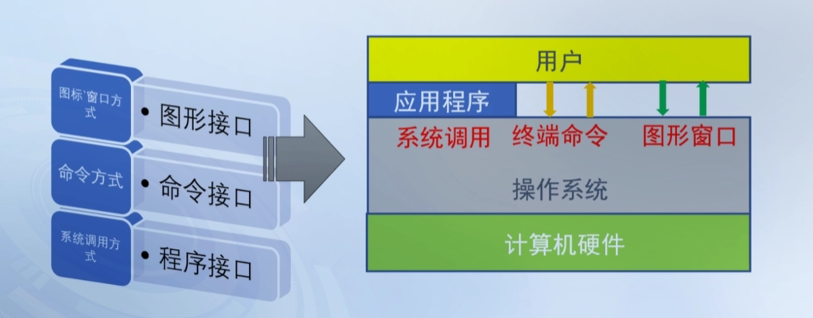
系统调用的处理过程
- 当用户使用系统调用时，产生一条相应的指令。
- CPU在执行到该指令时发生中断，发出有关的信号给陷入处理机构。
- 处理机构在收到CPU发来的信号后，启动相关的处理程序去完成该系统调用所完成的功能。
- 在处理系统调用前，陷入处理机构还需保存处理机现场。
- 系统调用处理结束后，要恢复处理机现场，从而转到用户程序继续执行。
操作系统的主要特征
- 并发现：两个或多个程序在同一时间间隔内执行
- 共享性：在内存的多个并发程序共享系统资源。
- 虚拟性：“虚拟”的概念在操作系统中随处可见，“虚拟”是对硬件功能的扩充。
- 异步性：内存中的多道并发程序的推进顺序、执行时间都是不确定的、不可预知的。
操作系统的结构设计
无结构操作系统
无结构也叫整体式结构或简单结构，在早期设计开发操作系统时，设计者只是把注意力放在功能的实现和获得高的效率上。整个操作系统的功能由一个一个的过程来实现，这些过程之间又可以相互调用，导致操作系统变为一堆过程的集合，其内部结构复杂又混乱。因此这种操作系统沒有结构可言。
优点：接口简单直接，系统效率高
缺点：沒有可读性，也不具备可维护性。
模块化结构操作系统
模块化结构是指将整个操作系统按功能划分为若干个模块，每个模块实现一个特定的功能。模块之间的通过接口实现交互。在模块化结构的操作系统中模块划分是关键问题。
优点：提高了OS设计的可靠性、可理解性和可维护性，增强了其适应性，加速了开发过程。
缺点：无序性。模块之间复杂地调用关系使得系统结构混乱，设计者无法找到可靠的开发各模块的顺序。
分层式结构操作系统
分层式结构就是把操作系统所有的功能模块按照功能调用次序分别排成若干层，各层之间的模块只用单向调用关系（例如，只允许上层或外层模块调用下层或内层模块）
分层式结构操作系统
THE是分层结构构造的第一个操作系统，分为六层
用户程序
输入输出管理
处理进程与控制台之间的通信
存储管理
处理机调度
硬件
优点：把功能实现的无序性改成有序性，可显著提高设计的准确性；
把模块间的复杂依赖关系改为单向依赖关系，即高层软件依赖于低层软件，便于调试和验证；
易扩充性和维护性；
缺点：层次划分困难。
系统效率较低。
虚拟机结构操作系统
虚拟机结构的基本思想：在裸机上运行操作系统的核心——虚拟机监控程序，使之具有多道程序并发执行的功能。虚拟机监控程序向上层提供若干台虚拟机，每台虚拟机仅仅包含CPU工作状态、I/O功能、中断和其他真实硬件所具有的功能，不具有文件等高级功能。在不同的虚拟机上可运行不同的操作系统，形成更高一层的虚拟机，这些系统被称之为是会话监控系统（Conversational Monitor System，CMS）
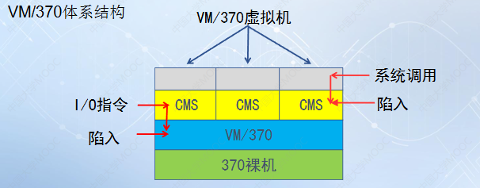
一台物理机，可以运行多个虚拟机，每个虚拟机可以运行不同的操作系统。
微内核结构操作系统
微内核结构的基本思想：把操作系统的非基本功能从内核中分离出来，使内核尽量简单，仅存放最基本、最主要的核心功能模块，其他服务和应用建立在内核之上，作为用户进程运行。
- 操作系统 =
微内核+核外服务器 微内核：提供OS最基本的核心功能和服务核外服务器：完成OS的绝大部分服务功能，由若干服务器或进程共同构成。
微内核结构：
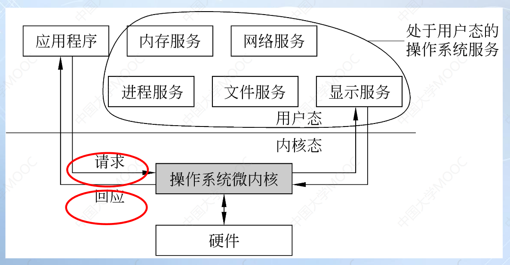
微内核结构的特点
优点：良好的扩充性；
可靠性高；
便于分布式处理。
缺点：消息传递效率较低。
典型操作系统：Mach、Windows NT。
Minix
操作系统的硬件环境
处理机状态及转换
处理机状态
计算机系统根据运行程序对资源和机器指令的使用权限把处理机的执行状态分为两类：核心态和用户态
核心态：又称为内核态、管态、特权态、系统态
指操作系统运行时，处理机所处的状态
用户态：又称目态、普通态、用户态。
用户程序运行时处理机所处的状态。
处理机状态的转换
核心态 -> 用户态设置
程序状态字（Program Status Word，PSW）里的处理机状态位。用户态 -> 核心态唯一途径：
中断
实例：Inter Pentium处理器
支持4个特权级别。R0级别权限最高，R3级别权限最低。操作系统可根据具体策略有选择的使用这些特却级别。目前大多数的操作系统都只用了R0级和R3级。
特权指令和非特权指令
在多道程序设计环境中，为保证计算机系统正确可靠的工作，通常将指令系统分成特权指令和非特权指令两部分。
特权指令：只能在核心态下执行的指令。非特权指令：核心态和用户态都能执行的指令。
控制和状态寄存器
程序状态字寄存器（PSW）
记录处理器的运行状态如工作状态码、条件码、中断码、中断屏蔽器等信息
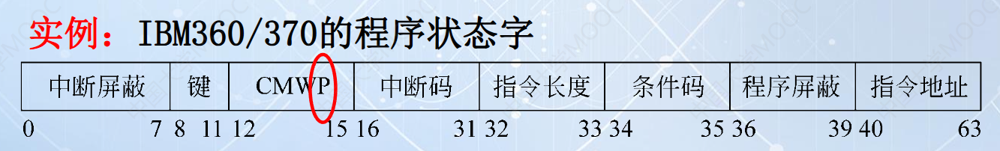
程序计数器（Program Counter，PC）
记录的是下一个要取出的指令的地址。
指令寄存器（Instruction Register，IR）
存放的是待执行的程序指令
中断和异常
中断的概念
中断是指由于某个事件的发生，改变了正在CPU上执行的指令的顺序。
中断系统是现代计算机系统的核心机制之一，它有两个组成部分：
- 硬件中断装置
- 软件中断处理程序
中断的分类
中断值得是由CPU以外的其他硬件设备所发出的中断，也称“异步中断”或者“外部中断”
异常是由CPU执行指令的某种特殊结果而引发的中断，也叫“同步中断”或者“内部中断”
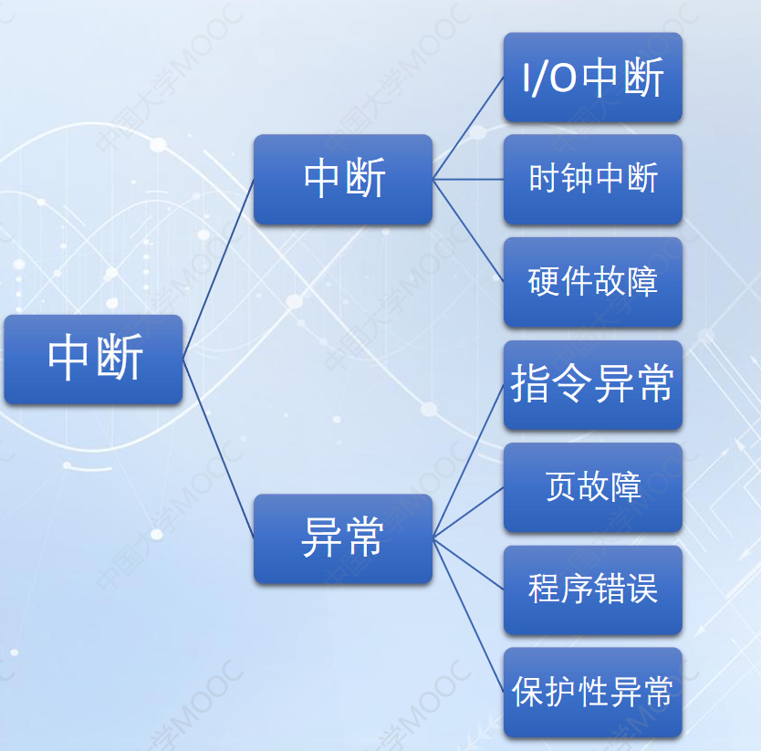
地址映射机构
在多道程序系统中，内存中同时存放多个程序，每个程序在内存中的存放位置是随机的，并且可以更改，所以操作系统通常要使用硬件系统中的地址映射机构进行地址的变换，保证用户程序放入内存后仍能正常的找到并执行完毕。
通道与DMA控制器
通道：专门负责I/O操作的处理机，通道程序存放在内存，通过执行通道程序控制I/O设备完成I/O操作，一次完成一组数据块的传输。
DMA：DMA控制器与通道类似，但功能相对简单，没有专门指令系统，一次完成一个数据块的传输。